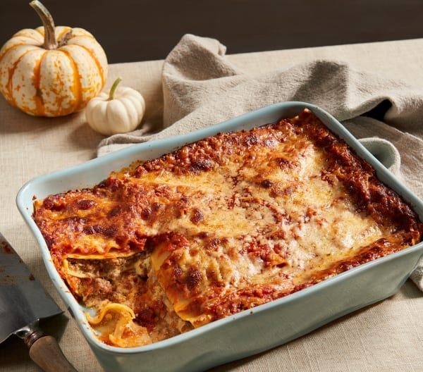

Lasagna

Description
Delicious vegetable lasagna with a white creamy sauce. A family favorite!
Ingredients
- 9 lasagna noodles
- ¼ cup margarine
- ¼ cup all-purpose flour
- ½ teaspoon salt
Steps
- Large pot of lightly salted water to a boil
- Preheat oven to 375 degrees F (190 degrees C).
- Whisk ricotta cheese, egg, and egg white together in a bowl.
- Bake in the preheated oven until cheese is lightly browned and bubbling, about 30 minutes.